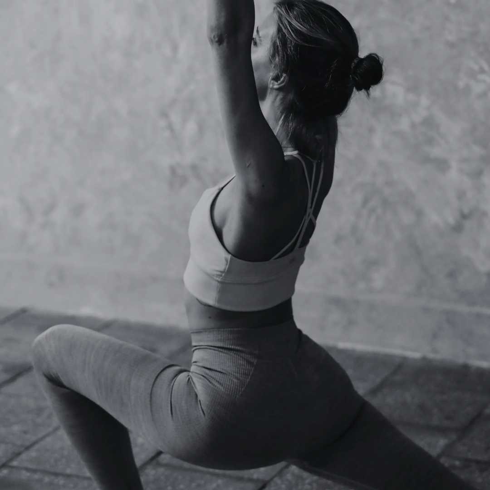

Forme & Entraînement

Faire du sport, c'est bon pour le corps et l'esprit.
Il suffit de quelques bonnes habitudes pour rester en forme.
Bouger,Transpirer,Se depasser:
Voilà l'essence de l'entrainement
Que vous soyez débutant ou confirmé,cette section vous guide à travers des routines efficaces,
des conseils et des méthodes pour progresser à votre rythme.
Découvrez comment construire un corps plus forts,plus endurant
et plus sain......un entrainement à la foi!
Bouge un peu chaque semaine
- Fais du sport 3 à 4 fois par semaine :
- Marche, course ou vélo pour bouger ton cœur.
- Pompes, abdos ou squats pour te muscler.
- Étirements pour rester souple.
Mange bien et dors bien
- Mange équilibré : légumes, fruits, protéines.
- Bois de l'eau.
- Dors suffisamment chaque nuit
Reste motivé
fais cve que tu aimes,sans te forcer
l'importance,c'est de bouger réguilièrement